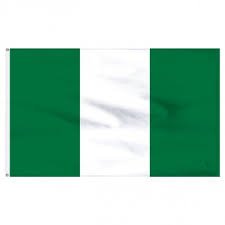

The Nigerian National Flag

About Nigeria:
The Federal Republic of Nigeria, is a country in West Africa. It is situated between the Sahel to the north and the Gulf of Guinea to the south in the Atlantic Ocean. It covers an area of 923,769 square kilometres (356,669 sq mi), and with a population of over 230 million, it is the most populous country in Africa, and the world's sixth-most populous country. Nigeria borders Niger in the north, Chad in the northeast, Cameroon in the east, and Benin in the west. Nigeria is a federal republic comprising 36 states and the Federal Capital Territory, where the capital, Abuja, is located. The largest city in Nigeria is Lagos, one of the largest metropolitan areas in the world and the largest in Africa.
Brief History about the Flag:
The flag of Nigeria was designed in 1959 and first officially hoisted on 1 October 1960. The flag has three vertical bands of green, white, green. The two green stripes represent natural wealth, and the white represents peace and unity.
Designing Nigeria's national flag:
In 1958, Nigeria started working towards becoming part of the big boys. We were ready to be an independent country, which led to the creation of a national planning committee. The national planning committee held a competition to select the national flag, with the winner chosen by popular vote.
There were about 3000 submissions, but in the end, Taiwo Akinkunmi’s design ultimately won. But did you know that the committee altered Taiwo’s original flag design? His original concept for the flag included a red burning sun in the middle of the white vertical stripe, with two green bands on both sides.
The sun symbolised divine protection and guidance, the green represents our natural wealth, and the white signifies peace.
However, due to Nigeria’s diversity, the committee decided it’d be better to have a relatively simple flag design. And on October 1, 1960, our new National flag was officially adopted and flown publicly for the first time.